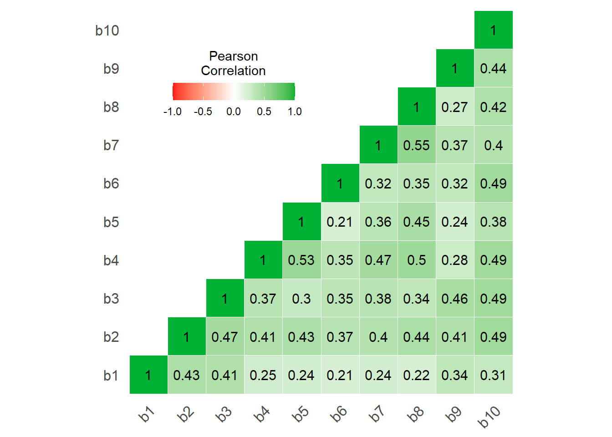

library(jmv)
jmv::reliability(
data = pss, vars = c(b1, b2, b3, b4, b5, b6, b7, b8, b9, b10),
revItems = c(b4, b5, b7, b8),
omegaScale = TRUE,
alphaItems = TRUE, omegaItems = TRUE, itemRestCor = TRUE,
corPlot = TRUE
)Якість даних
На наступному, четвертому етапі аналізу, здійснюється перевірка якості зібраної інформації – визначення надійності даних, на основі яких обчислюються інтегральні показники (шкали), вивчення характеру розподілу змінних, пошук незвичних спостережень. Легковажне ставлення дослідників до якості психологічного вимірювання є однією з суттєвих причин кризи відтворюваності. В літературі для позначення цієї проблеми використовується термін «сумнівні вимірювальні практики» (Flake & Fried, 2019). Стандарти АПА вимагають надання інформації про надійність і свідчення про валідність вимірювальних інструментів (тестів, спостерігачів, апаратури) на вибірці дослідження. Розповсюджену сьогодні практику наводити показник надійності-узгодженості α (альфа) Кронбаха західні методологи вважають застарілою і не завжди адекватною, оскільки він виходить з припущень про так звану «тау-еквівалентність» пунктів шкали (однакове навантаження на одну латентну змінну) і може мати високе значення, незважаючи на неодномірність даних (тобто, за відповідями можуть стояти декілька навіть не пов’язаних між собою латентних змінних). Більш коректний підхід полягає у перевірці явно заданої вимірювальної моделі засобами конфірматорного факторного аналізу і обчисленні міри надійності на її основі. Ця техніка знаходиться за рамками предмету даного т’юторіалу, тому тут я наведу найпростіший варіант: обчислення такого показника надійності, як ω (омега) МакДональда, на основі припущення про одномірність сукупності індикаторів на прикладі даних 10 питань шкали PSS:
Фрагмент коду 4. Обчислення α Кронбаха і ω МакДональда
RELIABILITY ANALYSIS
Scale Reliability Statistics
─────────────────────────────────────────
Cronbach's α McDonald's ω
─────────────────────────────────────────
scale 0.86 0.86
─────────────────────────────────────────
Item Reliability Statistics
──────────────────────────────────────────────────────────────────
item-rest correlation Cronbach's α McDonald's ω
──────────────────────────────────────────────────────────────────
b1 0.43 0.85 0.86
b2 0.65 0.83 0.84
b3 0.60 0.84 0.84
b4 ᵃ 0.60 0.84 0.84
b5 ᵃ 0.51 0.85 0.85
b6 0.49 0.85 0.85
b7 ᵃ 0.58 0.84 0.84
b8 ᵃ 0.58 0.84 0.84
b9 0.52 0.85 0.85
b10 0.66 0.83 0.84
──────────────────────────────────────────────────────────────────
ᵃ reverse scaled item
В цьому блоці функції reliability() з пакету jmv передаються такі аргументи: data – таблиця даних pss, в якій містяться відповіді досліджуваних, vars ¬– вектор імен десяти змінних b1-b10, які є індикаторами суб’єктивного стресу, revItems – вектор імен чотирьох змінних з зворотним ключем, omegaScale – опція, яка замовляє виведення показника ω, omegaItems – опція, яка замовляє виведення інформації про надійність шкали за показником ω, коли з неї видалено відповідний індикатор.
На даних нашого дослідження ω дорівнює 0.859, що свідчить про їхню задовільну надійність (має бути вищою за 0.75). Іншими словами, досліджувані цієї вибірки відповідали на питання шкали узгоджено. Часто серед індикаторів шкали можуть траплятися не зовсім якісні пункти (поганий переклад питань, переплутаний напрям ключа, проблеми з розумінням питання саме в цій групі досліджуваних). Отримати інформацію про індикатори, на які варто звернути увагу для покращення якості вимірювання конструкту, можна з наступної таблиці 2:
Таблиця 2. Статистики надійності пунктів шкали
Як можемо бачити, при викиданні жодного питання надійність шкали не збільшується. Без першого питання вона стає рівною 0.856, тобто, загальна надійність при його виключенні практично не зміниться, тому можна було б скоротити шкалу при необхідності. Проте насправді причини такого стану справ можуть бути значно складнішими, так що не варто поспішати.